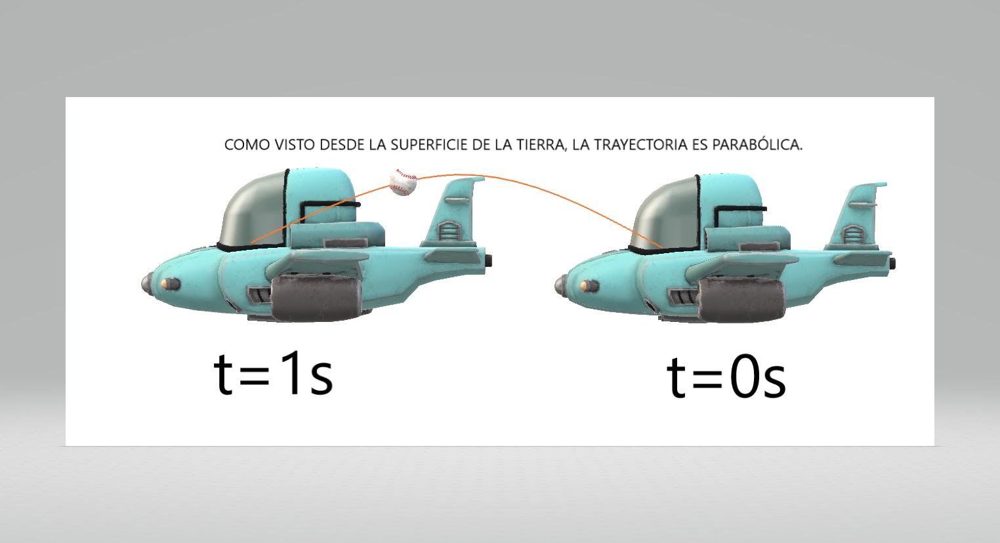
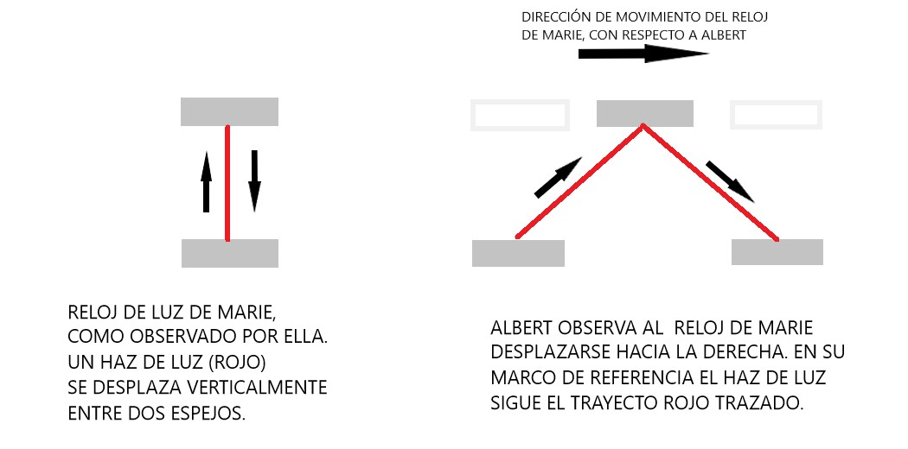

Modulo 1.1
En este módulo vamos aprender la teoría de la relatividad general de Einstein, que suena muy difícil, pero vamos aprender nada más que lo básico lo que hace falta para entender cómo se producen y cómo se predicen las ondas gravitacionales
Modulo1.2
Esta Teoría de la Relatividad General de Einstein, que es una teoría de la gravedad explica entonces esta misma fuerza gravitacional, la misma fuerza de los planetas así como lo explicaba Newton pero con una teoría bastante más difícil. ¿Qué ventaja existe en tener una teoría más complicada para explicar lo mismo?
Texto complementario
1FaMAF, UNC; Instituto de Física Enrique Gaviola (IFEG), CONICET, Ciudad Universitaria, (5000) Córdoba, Argentina. 2 Louisiana State University, Baton Rouge, LA 70803, USA

1 La teoría de la relatividad: Especial y General
Seguramente usted habrá escuchado hablar, ya en el pasado, acerca de la teoría especial de relatividad y también de la general. Seguramente también alguna vez se preguntó cuáles son sus diferencias o qué tiene de especial la teoría especial, o de general la general. Básicamente podemos decir que la teoría general de la relatividad es una teoría del espaciotiempo y a su vez, o como dos caras de una misma moneda, de la gravitación. En cambio, la especial es un caso particular de ésta: aquella donde se desprecian todos los efectos gravitacionales. Técnicamente hablando, la teoría general de la relatividad es una teoría sobre el espaciotiempo curvo, y sobre como éste influencia y es influenciado por el contenido de materia y energía

Albert Einstein, físico alemán, creador de la Teoría de la Relatividad. Crédito: Orren Jack Turner
Por otro lado, la teoría especial de la relatividad es una teoría del espaciotiempo plano: se desprecia toda influencia de la materia y energía sobre la estructura del espaciotiempo, la materia no lo curva: el espaciotiempo está dado, fijo, y es plano; aunque no obstante el espaciotiempo en sí sigue influenciando sobre la dinámica de la materia. Es cierto que al estudiar campos gravitacionales débiles, a veces (no siempre) alcanza con utilizar la bien conocida ley de gravitación universal de Newton, pero incluso en esas situaciones, la verdadera razón subyacente que está detrás del campo gravitacional sigue siendo el espaciotiempo curvo. Por otro lado, en otra gran variedad de situaciones, la aproximación newtoniana a la gravedad no es suficiente; por ejemplo cada vez que queramos describir el movimiento de planetas con alta precisión, o realizar calibraciones en los relojes atómicos de los satélites encargados del funcionamiento del sistema GPS, o en el estudio de los campos gravitacionales de objetos muy compactos (como agujeros negros o estrellas de neutrones), o en situaciones cosmológicas donde estudiamos al Universo como un todo. Es allí donde la relatividad general muestra su practicidad y belleza en todo su esplendor. Y claro está, también esta el fenómeno que nos interesa estudiar en este curso: las ondas gravitacionales. Discutamos brevemente entonces cada una estas teorías.
1.1 La teoría especial de la relatividad
1.1.1 Conceptos básicos
La teoría especial de la relatividad fue formulada por Albert Einstein en 1905, y se basa en dos postulados básicos: Postulado 1: Todas las leyes de la física son iguales para todo sistema de referencia inercial. Postulado 2: La velocidad de la luz en el vacío es la misma para todo sistema de referencia inercial, independientemente del movimiento de la fuente generadora de luz. Recordemos que la velocidad de la luz se la representa usualmente con la letra c y tiene un valor de 299792,458 km/s, o como se la aproxima habitualmente c ≈ 300000 km/s. Cabe destacar que si bien ésta fue la formulación histórica de la teoría especial de la relatividad, hay una versión alternativa al segundo postulado que dice que existe una velocidad finita máxima para la propagación de la información. Teniendo en cuenta el primer postulado y ésta versión del segundo postulado se sigue que dicha velocidad máxima debe ser necesariamente la misma para todo observador. Las ventajas de la segunda versión es que no hace tanto hincapié en la interacción electromagnética (que junto a la gravedad eran en la época en que Einstein formuló sus postulados las únicas dos interacciones fundamentales conocidas). Hoy en día sabemos que toda interacción fundamental se propaga a dicha velocidad máxima.
Las consecuencias de estos dos postulados son asombrosas, maravillosas, inicialmente anti intuitivas y por siempre encantadoras. Aunque no es por ninguna de esas razones que con amos en la validez de ellos, sino porque las observaciones y miles de experimentos y usos prácticos así los avalan. Cabe aclarar que aun cuando la belleza o simpleza de una teoría ha sido muchas veces un importante motor para motivarla o proponerla, no es que confiemos en una teoría por su belleza intrínseca, sino mas bien por cuanto se ajusta en sus predicciones y poder de explicación a lo observado. Han existido teorías bellas, elegantes, pero que sin embargo no se han correspondido con la realidad. Es la naturaleza quien tiene la última palabra.
Discutamos ahora sí, el contenido de cada uno de estos postulados. Comencemos con el primero. En el mismo aparece la frase todo sistema de referencia inercial". pero ¿qué es un sistema de referencia? y en particular ¿qué significa que sea inercial? Un sistema o marco de referencia está conformado básicamente por un cuerpo que se toma como referencia para medir las posiciones de otros cuerpos u objetos físicos, y de un reloj (o mas precisamente un conjunto de relojes). A partir de ellos se define un sistema de coordenadas espacio-temporales (se necesitan 4 números para identificar a un punto en dicho marco de referencia: 3 para localizar su posición espacial y otro extra para saber en que instante de tiempo se encontraba en dicha posición espacial.) Un ejemplo de marco de referencia es nuestro propio planeta Tierra. Otro podría ser un avión si estamos viajando en el mismo, un tren, etc.
Notar como las posiciones espaciales son relativas, y dependen del marco de referencia desde donde se las mide. Por ejemplo, suponga que usted se encuentra sentado en un avión viajando a 800 km/h con respecto a alguien en el suelo terrestre y que en un determinado momento toma una pelota de béisbol con su mano y la arroja verticalmente hacia arriba, de tal manera que vuelva a caer en su mano luego de transcurrido 1 segundo según su reloj. Si yo le preguntase donde cayó el objeto, usted probablemente respondería: "En el mismo lugar desde donde lo arrojé, en mi mano". Y eso es así porque usted toma como sistema de referencia el lugar donde se encuentra: el avión.

Figura 2: Trayectoria de un objeto lanzado verticalmente por un pasajero que se desplaza en un avión a velocidad constante. Desde su punto de vista, la trayectoria descrita es vertical (linea naranja).
No obstante, si un observador cómodamente sentado en la superficie de la Tierra pudiese ver esa situación a través de un telescopio, lo que vería es que ese objeto no siguió un movimiento vertical, sino una trayectoria parabólica, y en dicho desplazamiento recorrió unos 220 metros en la dirección de movimiento del avión antes de volver a caer

Figura 3: Trayectoria de ese mismo objeto, pero desde el punto de vista de un observador que se encuentra en reposo sobre la superficie terrestre. Desde su perspectiva, la trayectoria es parabólica y durante el segundo que se encuentra el el aire el objeto se desplaza unos 220 metros en la dirección de movimiento del avión antes de regresar a la mano del pasajero.
¿Quién de los dos tiene razón? Tal vez usted responda: "Sé que el avión se está moviendo con respecto a la Tierra, así que quien está en el suelo debe tener razón; el movimiento descrito por mí desde el avión es tan solo aparente, y el del observador en en el suelo terrestre es real". Sin embargo, si respondiese de esa manera, es porque acaba de tomar como sistema de referencia preferencial al planeta Tierra.
Pero la historia no termina ahí: si alguien que está en reposo con respecto al Sol pudiese observar la misma situación, diría que el desplazamiento del objeto es distinto y que también durante ese segundo el cuerpo se desplazó unos 30 km en la dirección de movimiento de la Tierra en su órbita alrededor del Sol (en realidad la situación es un poco mas complicada, porque también la Tierra tiene un movimiento rotacional alrededor de su propio eje, y el desplazamiento debe tener en cuenta dicho efecto, el cual depende del lugar donde se encuentra). Claro está que otro observador podría situarse en reposo con respecto al centro galáctico, y por ende tener en cuenta que el Sol, junto a los planetas, el avión y el objeto también se desplazan durante ese segundo unos 220 km alrededor del centro galáctico; el movimiento de la pelota se vuelve cada vez más complejo. A su vez nuestra galaxia se desplaza en el espacio con respecto a las galaxias vecinas, etc.
De estos conceptos, no solo aprendemos a qué consideramos un sistema de referencia, sino también que la posición de un objeto, distancia recorrida o forma de la trayectoria es un concepto relativo: depende del observador, o del marco de referencia utilizado.
Notar que hay algo que hemos supuesto implícitamente en toda esta discusión; y es que relojes semejantes que funcionan exactamente de la misma manera y que fueron sincronizados para marcar la misma hora en un determinado momento, continuarán sincronizados entre sí y marcharán al mismo ritmo independientemente del movimiento del observador o del sistema de referencia utilizado. Como observaremos en breve y fue notado por Einstein, una consecuencia fundamental de los postulados de la relatividad especial, es que esa suposición ya no puede mantenerse como válida.
Ahora que sabemos que es un sistema de referencia, discutamos a que se considera inercial. Básicamente un sistema de referencia inercial, es un sistema donde toda partícula libre (es decir sobre la cual no actúan fuerzas) se mueve en linea recta y a velocidad constante.
De esta definición se puede demostrar que todo sistema de referencia inercial se debe desplazar con respecto a otro también inercial a velocidad constante. Si así no fuera, entonces el movimiento de partículas libres que en un sistema es rectilíneo y uniforme no lo sería en el otro, y por ende no podría ser considerado inercial.
Estos sistemas son importantes, porque en ellos las leyes de la física se escriben de manera muy sencilla, y en muchísimas situaciones son realizables como primera aproximación. El primer postulado entonces se puede entender que expresa que todas las leyes de la física (mecánicas, electromagnéticas, termodinámicas, etc.) son las mismas en todos los sistemas inerciales. Esto implica que ningún observador en un sistema inercial se puede considerar especial con respecto a otro sistema inercial, ya que por experimentos internos en su sistema no puede determinar ninguna característica que lo prefiera por sobre los demás.
Analicemos ahora el segundo postulado y veamos como las cosas se ponen realmente de lo mas interesante. Consideremos la siguiente situación pensada en términos newtonianos: Marie es una pasajera que se encuentra ubicada en un asiento justo en el frente de un tren súper veloz viajando en linea recta a una velocidad constante de 800 km/s con respecto a Albert, un observador en reposo en el andén. En cierto momento, Marie arroja un proyectil hacia adelante, en la misma dirección de movimiento del tren y a 20 km/s con respecto a su propio marco de referencia. Visto desde el andén, uno espera que la velocidad del proyectil medida por Albert sea de 820 km/s, ya que durante el lapso de 1 segundo, el proyectil se halla 20 km por delante del tren, y a su vez, durante ese mismo segundo el tren se desplazó 800 km. Es decir, con respecto a Albert, el proyectil recorrería en ese segundo una distancia de 820 km y su velocidad entonces resulta de la suma de las dos velocidades involucradas. Pero si en vez de un proyectil Marie prendiese una linterna, parecería que, según el argumento anterior, la velocidad de la luz emitida debería depender de quien la mide, en clara contradicción con el segundo postulado. Se concluye entonces, que alguna suposición (o varias) en la argumentación en términos newtonianos no puede ser válida o sostenible. Exactamente cuales fue algo de lo cual Einstein se dio cuenta a principio del siglo pasado y cambió para siempre nuestras nociones espaciotemporales: el hecho que hayamos concluido que las velocidades se deben adicionar se hizo bajo varias suposiciones que, al haberse supuesto de sentido común, quedaron implícitas: la marcha de los relojes, la simultaneidad de dos o mas sucesos, las medidas de longitudes de objetos en movimiento y la sincronización de relojes es independiente del estado de movimiento del observador. Sin embargo, justamente son todas esas suposiciones las cuales debemos abandonar, porque no se condicen con la realidad. Resultará entonces, como veremos en lo que sigue, que no solo el espacio, sino también el tiempo es relativo!
Veamos brevemente como a partir de tres experimentos mentales, de esos que le encantaban a Einstein se llegan a esas conclusiones.
1.1.2 Relatividad de la simultaneidad:
En la vida diaria tendemos a creer que si dos eventos separados espacialmente entre sí son simultáneos con respecto a algún observador, lo deben ser también para cualquier otro. Por ejemplo, si yo chasqueo los dedos de mi mano derecha al mismo tiempo que hago lo mismo con los de mi mano izquierda, parecería raro que alguien que se esté moviendo con respecto a mí se atreviera a afirmar que para él, primero chasqueé los de la mano izquierda y recién pasados 3 minutos los de la derecha. Sin embargo, debemos renunciar el considerar que la simultaneidad es un concepto absoluto e independiente del observador.
Veamos el por qué a través de la siguiente situación. Supongamos que Marie se ubica ahora en la mitad de un tren, el cual se desplaza a cierta velocidad constante con respecto a Albert, quien nuevamente se encuentra en el andén. Asumamos que en un determinado instante en el cual Albert y Marie están frente a frente, Marie lanza dos haces de luz en direcciones opuestas, dirigidos hacia los extremos del tren. Es decir, uno dirigido hacia el frente y el otro hacia la parte trasera. Asumamos además que en cada extremo hay detectores fotoeléctricos y un par de lámparas asociadas a cada uno de ellos, tal que cuando reciben los haces de luz respectivos encienden su respectiva lámpara. Como ella se encuentra en la mitad del tren y la velocidad de la luz es siempre igual a c, ambos haces llegarán desde su punto de vista simultáneamente a ambos extremos del tren y por ende ambas lamparitas se encenderán al mismo tiempo. Sin embargo, desde el punto de vista de Albert, como el tren se está moviendo y cada haz también se propaga a la velocidad de la luz, el extremo trasero será alcanzado por el haz luminoso antes que el extremo delantero. Por lo tanto, desde el punto de vista de Albert, la lamparita del extremo trasero se encenderá antes que la del delantero. Conclusión: Decir que dos sucesos localizados en lugares distintos ocurren al mismo tiempo es una noción dependiente del observador. La simultaneidad no es absoluta, sino relativa.
1.1.3 Dilatación del tiempo:
Supongamos ahora que disponemos de un sencillo reloj de luz. Éste básicamente consta de dos espejos y un haz luminoso que se refleja entre ellos, de tal manera que cada vez que toca el espejo inferior un contador hace click y los registra. Por ejemplo si el reloj tuviese una altura de 150.000 km, cada click se realizaría cada 1 segundo, ya que es el tiempo en demora la luz entre ir y volver al espejo inferior. En realidad no sería necesario hacerlo tan grande, bastaría con hacerlo de bolsillo, y que si queremos que mida segundos, el contador necesite esperar determinada cantidad de clicks antes de registrar el paso de cada segundo. Asumamos ahora que dicho reloj se encuentra en el tren de Marie posicionado verticalmente, perpendicular a la dirección de movimiento. Como antes, el tren se desplaza a una cierta velocidad constante con respecto a Albert. Visto por Albert entonces, el trayecto del haz de luz no es vertical, sino de la forma zigzagueante mostrada en la figura 4.

Figura 4: Un sencillo reloj formado por dos espejos y un haz de luz que viaja entre ellos.
Por lo tanto, desde el punto de vista de Albert, entre cada click, el haz de luz tuvo que recorrer una distancia mayor que la que observa Marie. Pero como para él la luz también se desplaza a la velocidad c, y al tener que recorrer una mayor distancia, observará que con respecto a un reloj por él llevado, cada click del reloj de Marie demorará mas que 1 segundo (ya que debe recorrer una distancia mayor a 300.000 km). Es decir, cuando el reloj de Albert marca 1 segundo, observa que el de Marie aún no, y por lo tanto el reloj de Marie marcha mas lento que el suyo. Alguien podría objetar que esto es una particularidad del reloj utilizado, y que con un reloj mecánico o digital eso no tiene obligación de suceder de la misma manera. Sin embargo, esto debe ocurrir para todo reloj, independientemente del mecanismo interno de funcionamiento. Si así no fuese, Marie podría usar su segundo reloj para medir el tiempo entre click y click, y si encontrase que ese tiempo es distinto de 1 segundo concluiría que la velocidad de la luz, con respecto a ella no sería c, algo que sabemos que no ocurre. Claro está, que Marie podría proceder de igual manera y observar un reloj de luz transportado por Albert, y como desde el punto de vista de ella, es Albert quien se mueve a una velocidad de igual magnitud pero dirección contraria, concluir que es el reloj de Albert el cual retrasa.
1.1.4 Contracción de las longitudes:
Asumamos ahora que el tren en movimiento donde se encuentra Marie, pasa por un túnel y que Albert desea medir la longitud del tren. Notar que para medir la longitud de un objeto en movimiento, uno tiene que saber simultáneamente que posición ocupa cada extremo del objeto considerado: no tendría sentido localizar la parte trasera del tren en un momento determinado y luego esperar 10 minutos para marcar donde está la parte delantera, ya que ésta durante esos 10 minutos se habría desplazado hacia adelante, y eso no correspondería con una razonable medida de su longitud. Supongamos que Albert, realiza su medición teniendo cuidado de hacer marcas en puntos donde cada extremo del tren pasó simultáneamente y concluye que mide lo mismo que el túnel por el cual pasó.
Para llegar a esa conclusión Albert utilizó el siguiente procedimiento: Primero se posicionó justo en la mitad del túnel, y dispuso unas bombillas eléctricas en cada extremo del mismo, de tal manera que cuando el frente del tren pase por la salida se encienda la bombilla eléctrica respectiva y un evento similar cuando la parte trasera del tren pase por la entrada del túnel. Luego, asumamos que la luz de las dos bombillas fueron recibidas por Albert simultáneamente. Eso quiere decir, según Albert, que hubo un momento donde el tren cabía exactamente en el interior del túnel y por lo tanto Albert infiere que el tren tiene la misma longitud que el túnel. Ahora bien, desde el punto de vista de Marie, las bombillas no se encendieron simultáneamente. En particular, debido a su movimiento (y la constancia de la velocidad de la luz), ella recibió primero la luz proveniente de la salida del túnel, y por ende concluye que cuando el frente estaba saliendo del túnel, la parte trasera del tren aún no había entrado. Concluye entonces que su tren es más largo que el túnel o equivalentemente interpreta que Albert midió un largo del tren que es inferior al que ella mide (por ejemplo con una cinta métrica, haciendo marquitas en el suelo y sumándolas).
1.1.5 Otras consecuencias de los postulados de Einstein
Existen otros muchísimos fenómenos cinemáticos asociados a la relatividad. A partir de ellos, surge que la ley de composición de velocidades relativas no sigue la prescripción newtoniana: no se suman algebraicamente como nuestra primera intuición nos indica. De decir que el proyectil se trasladaba a 20 km/s con respecto a Marie, no podemos concluir que luego de un segundo, con respecto a Albert el proyectil estará 20 km mas lejos que el tren. Los relojes marchan distinto, las distancias entre eventos también son distintas. No vamos a entrar en detalles, pero incorporando todos estos fenómenos se puede ver que las velocidades siguen una ley de composición que es compatible con ambos postulados de la relatividad.
Otra consecuencia relacionada es que ningún cuerpo masivo se puede desplazar a una velocidad mayor a la de la luz. De hecho, como se dijo anteriormente, el segundo postulado puede reemplazarse por uno equivalente que dice que existe una velocidad finita de propagación de la información. Quizás una de las mas conocidas predicciones de la teoría es que demuestra una equivalencia entre masa y energía, la famosa ecuación E = mc2.
Pero tal vez lo mas interesante es que si bien el espacio y el tiempo pasan a ser conceptos relativos, se puede probar la existencia de una estructura subyacente que es independiente del observador: el espaciotiempo; el cual en el ámbito de la relatividad especial resulta ser plano. Cuando Einstein se puso en la carrera de compatibilizar la gravedad (hasta ese momento considerada una fuerza de acción instantánea) con los nuevos principios relativistas se dio cuenta que la gravedad podía explicarse a través de un espaciotiempo curvo, que localmente pareciera a uno plano (de la misma manera que en la Tierra, si bien es curva, localmente aparenta ser plana). Para ello se inspiró en lo que hoy se llama Principio de equivalencia y que dio origen a la seguramente mas bella teoría científica lograda por el intelecto humano
1.2 La teoría general de la relatividad
1.2.1 Relatividad General y el principio de equivalencia
Acabamos de hacer notar que una de las consecuencias de la teoría especial de la relatividad es el hecho de que nada pueda viajar más rápido que la luz. Sin embargo esto parecía ser incompatible con la ley de gravitación de Newton, donde la fuerza de atracción entre dos objetos se presentaba como instantánea.
Einstein, consciente de esta inconsistencia se embarcó en la búsqueda de una nueva ley de gravitación que fuese compatible con su recién presentada teoría especial de la relatividad. La tarea no fue fácil, y le llevó varios años encontrar la respuesta final.
Una de las ideas que lo motivaron en su búsqueda, fue la que el mismo consideró la idea mas feliz de su vida: el principio de equivalencia. Ya era sabido desde la época de Galileo, que si uno sostiene dos cuerpos en el campo gravitacional terrestre y los arroja desde la misma altura, ambos cuerpos sienten la misma aceleración de gravedad independientemente de su masa o composición interna.1.
Con esta observación, Einstein se dio cuenta que si una persona se encontraba en un elevador y de repente alguien cortase el cable de suspensión, entonces, mientras durase la caída, no habría forma de distinguir entre esa situación y la de encontrarse libremente flotando por el espacio. Si el soltase una manzana, al caer con la misma aceleración que él, la vería flotar, y si le imprimiese cierta velocidad horizontal aun cuando desde la superficie terrestre la trayectoria se vería como parabólica, para el desafortunado señor del ascensor seguiría una linea recta y a velocidad constante. Eso lo llevó a formular el principio de equivalencia.
1 El hecho de que hagamos hincapié en la altura, se debe a que la fuerza de atracción entre dos cuerpos depende en general de la distancia entre los cuerpos, y por ende a distinta distancia, distinta aceleración. De cualquier manera esa variación en la fuerza es gradual, incluso en el espacio a 400 km de distancia de la Tierra (donde órbita la estación espacial internacional) la fuerza de atracción gravitacional es tan solo un 12% menor que en la superficie terrestre!!! El hecho de que los astronautas parezcan ingrávidos es tan solo porque tanto ellos como la estación espacial están en caída libre.
Principio de equivalencia: Todo de sistema de referencia en caída libre en un campo gravitacional equivale localmente a un sistema de referencia inercial.
Eso quiere decir que las leyes de la física deben lucir igual que en relatividad especial para esa clase de sistemas, al menos en una región pequeña localizada y por un intervalo pequeño de tiempo.
Ya vimos previamente que en un sistema de referencia inercial, todas las partículas libres siguen trayectorias rectilíneas y uniformes. Sin entrar en detalles, vale la pena decir que ese movimiento se puede también describir en el espaciotiempo como una trayectoria que tiene aceleración cero en el sentido 4-dimensional. A ese tipo de trayectorias se las conoce técnicamente como geodésicas espaciotemporales.
Por lo tanto, el principio de equivalencia induce a pensar que como para un sistema de referencia en caída libre (que dijimos que localmente se parece a un sistema de referencia inercial), las partículas que son solo sometidas al campo gravitacional parecen moverse también en linea recta y a velocidad constante, ellas también podrían pensarse que tienen aceleración 4-dimensional nula, o en otras palabras, ser geodésicas. Es decir podríamos pensar que del mismo modo que cuando despreciábamos la gravedad decíamos que una partícula libre tiene un movimiento rectilíneo y uniforme (o geodésico), entonces incluso con gravedad las partículas de prueba 2 también siguen geodésicas. Sin embargo, la versión 4-dimensional de la parábola seguida por la manzana no es una geodésica del espaciotiempo plano de la relatividad especial, entonces Einstein llegó así a su segunda gran idea: para los sistemas en caída libre el espaciotiempo solo se parece localmente al espaciotiempo de relatividad especial, pero globalmente las geodésicas son muy distintas, entonces el espaciotiempo debe ser distinto, y solo parecerse al de relatividad especial en la vecindad de cada punto.
Así llegó a la idea de que el espaciotiempo debe ser curvo. La gravedad ya no se vería mas como una fuerza en el sentido usual. Es una consecuencia de la geometría del espaciotiempo. Las partículas de prueba que solo estén sometidas a la acción de la gravedad siguen en dichos espaciotiempos trayectorias geodésicas, de la misma manera que una partícula de prueba en el espacio vacío y lejos de toda masa también seguiría.
A Einstein le llevó varios años mas encontrar cuales eran esos espacios, o mas precisamente, como la materia los determinaba. Fue en casi simultáneo con David Hilbert que llegó a sus ecuaciones finales en el año 1916. Dichas ecuaciones permitían decir cual era el espaciotiempo asociado a una dada distribución de materia y energía. Sus predicciones se reducían a las mismas de la gravedad newtoniana cuando uno trabaja con campos débiles y bajas velocidades. Y por lo tanto ya tenía a su favor todos los test experimentales y observacionales que la teoría Newtoniana había pasado con éxito. Pero además permitía describir nuevos fenómenos, o explicar algunos que no tenían solución en la teoría newtoniana (como la precesión del perihelio de Mercurio).
2 Una partícula de prueba es aquella que si bien puede ser influenciada por otros cuerpos, se desprecia su influencia por sobre los demás. Esto se hace a los nes de despreciar el propio campo gravitacional generado por la manzana por ejemplo, que si bien existe en esta situación puede ser considerado despreciable
Cabe destacar que uno debe diferenciar entre la descripción de la gravedad como curvatura del espaciotiempo y las ecuaciones que describen a dichos espacios. Si bien hasta ahora las ecuaciones de Einstein han superado con éxito todos los test a las cuales se han sometido, eso no significa que ellas sean las ecuaciones definitivas. Gracias a la detección y análisis de ondas gravitacionales, disponemos de nuevas formas de poner a prueba a dichas ecuaciones en situaciones mas extremas.
De cualquier manera, la idea fundamental de la descripción de la gravedad como curvatura del espaciotiempo no cambiará, y es algo que a los seres humanos nos debería hacer sentir orgullosos. Nosotros, minúsculas y efímeras colecciones de átomos viviendo en un también minúsculo y efímero planeta hemos sido capaces de comprender algo tan íntimo como esencial de este vasto Universo: la estructura del espaciotiempo, componente fundamental que le da cuerda, vida, dinámica y sustento a todo lo que existe.

Figura 5: En la imagen puede verse lo que pareciera ser un gato sonriendo. Los arcos son imágenes de galaxias lejanas formadas por la curvatura de la luz al atravesar una zona de campo gravitacional. A este fenómeno que se explica usando la relatividad general y se lo conoce como lente gravitacional. Crédito: NASA & ESA.
1.2.2 Agujeros negros
Tal vez una de las predicciones mas sorprendentes de la teoría general de la relatividad es la de la existencia de espaciotiempos que describen a lo que hoy en día se conocen como agujeros negros.
Básicamente los agujeros negros, predichos por primera vez como soluciones a las ecuaciones de Einstein, son objetos donde existe cierta región sobre la cual todo aquello que la atraviesa no puede volver a salir, ni siquiera la luz. Al borde de esa región se lo conoce como horizonte del agujero negro. Estos objetos son muy compactos, en el sentido de que tienen mucha masa concentrada en una región muy pequeña. Por ejemplo, si quisiéramos formar un agujero negro con toda la masa del planeta Tierra, deberíamos comprimirla a una esfera de unos 8 milímetros de radio!! En el caso del Sol, sería de unos 3 kilómetros.
No obstante, en la naturaleza existen mecanismos de formación de agujeros negros. Los agujeros negros que resulten de colapso gravitacional, o sistemas binarios se esperan que rápidamente decaigan a una situación estacionaria. Por ejemplo, si se tratase de un colapso esférico de materia, el agujero negro final también sería esférico. En cambio si se tratase de un sistema binario el producto final sería un agujero negro rotante estacionario el cual no es esférico aunque sí tiene simetría alrededor del eje por el cual rota.
En las cercanías de un agujero negro pueden pasar cosas muy extremas, por ejemplo el tiempo pasaría muchísimo mas lento que el de aquel alejado del mismo, a su vez su campo gravitacional es tan intenso que permite que la luz se curve tanto que puede incluso seguir a determinada distancia órbitas cerradas alrededor del agujero negro (de la misma forma que los planetas alrededor del Sol).
En su interior, las ecuaciones de Einstein predicen la existencia de una región conocida como singularidad, donde la curvatura del espaciotiempo se vuelve infinita. Sin embargo, se espera que en tales condiciones las ecuaciones que describen a los espaciotiempos contengan modificaciones de origen cuántico. Si la singularidad sobrevive o no en una versión cuántica de la gravedad es algo de lo cual todavía no podemos decir nada con certeza.

Figura 6: Imagen artística que representa un agujero negro acretando materia de una estrella cercana.
Crédito: Victor el Paio. Creative Commons licence CC by SA 4.0
Modulo 2.1
¿Qué es lo que produce ondas gravitacionales? De acuerdo a la teoría, cualquier masa que no sea esférica y este acelerándose produce ondas gravitacionales.
Vos y yo aquí, estamos produciendo ondas gravitaciones, la cuestión es ¿qué sistemas producen ondas gravitacionales detectables?
La predicción de Einstein en 1916 es que las constantes que predicen la amplitud de estas ondas gravitacionales dice que son pequeñísimas, al menos que estén producidas por masas muy grandes, muy compactas que estén moviéndose muy rápido, entonces no estamos hablando de mi moviendo mis manos sino de estrellas moviéndose muy rápido o de todo el universo.
Modulo2.2
Otro sistema son las estrellas de neutrones.
Las estrellas de neutrones son las estrellas más compactas que hay, al menos que sean agujeros negros. Es lo que queda después de una explosión de supernova, a veces queda un agujero negro o a veces queda una estrella de neutrones que está hecha de partículas elementales.
Estas estrellas rotantes que giran bastante rápido son muy masivas, la masa del sol en el tamaño de una ciudad mediana, ni siquiera de una ciudad grande, sino una ciudad mediana.